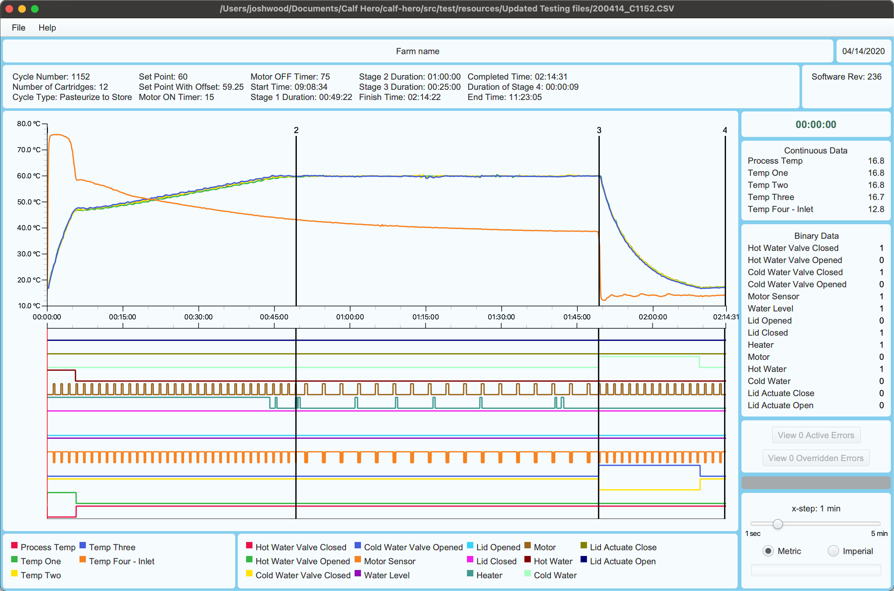
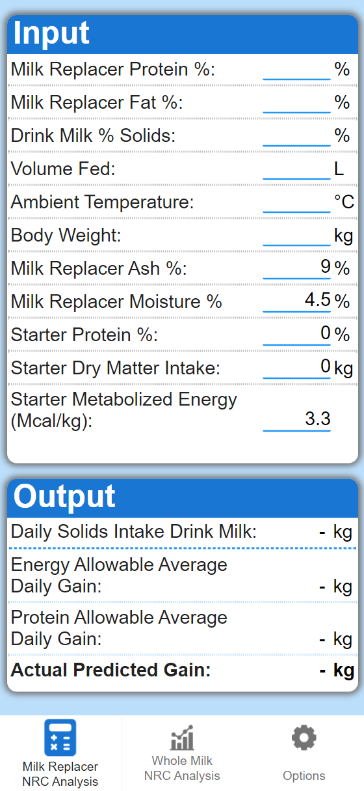
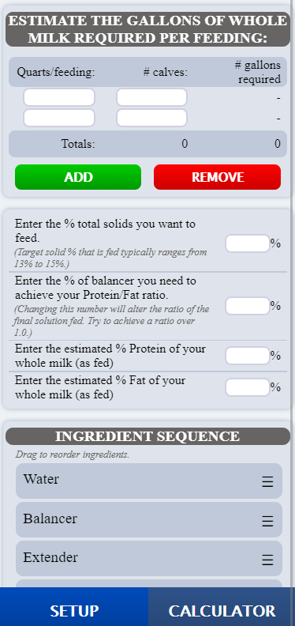
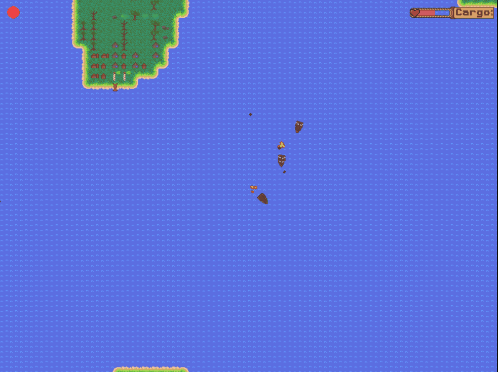
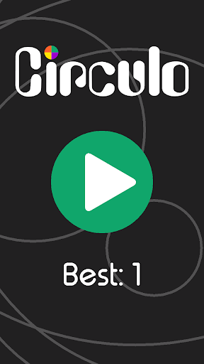

About me
I’m a Junior at the University of Wisconsin-Platteville studying software engineering who has developed mobile and desktop applications for private companies as a freelancer. Through my coursework, personal projects, and professional projects, I’ve learned how to develop readable and reliable code that is structured to accommodate future changes. I am most experienced with Java, having used it for several class projects, including an Android app and a Pokemon-esque game AI that implemented the minimax algorithm. Most notably, I’ve used Java, with JavaFX, to develop a desktop data visualization application for Golden Calf Company. I also have experience with JavaScript and front-end, which I used when developing mobile apps for Milk Products Inc. While working with these companies, I’ve learned how to understand and communicate software requirements, especially with people who don’t have a software background.
Outside of programming, I love spending time outdoors hiking and mountain biking. Last spring, I spent 4 months thru hiking the entire Appalachian Trail, trekking 2,192 miles from Georgia to Maine. Challenging myself athletically and connecting through nature in outdoor pursuits is an important part of my life.
Throughout high school and during the summer of 2020, I worked as a manager for a McDonald’s in my hometown. In that position, I lead and trained people of a wide variety of ages and backgrounds. I also communicated with customers frequently and was responsible for ensuring customers were satisfied whenever they had any issues. I’ve continued to use the leadership and communication skills I developed while working there as the event coordinator for my university’s outdoors club. In this position, I am responsible for planning and guiding weekly camping, climbing, and paddling trips.

Skills
- Java
- Python
- HTML/CSS
- JavaScript
- C++
Projects
Summer, Fall 2020
Calf Hero
Calf Hero is a piece of software I developed for Golden Calf Company that is used to analyze how their colostrum pasteurizers are performing. The program will take a record of the pasteurizer’s sensor measurements over time as an input (in the form of a large CSV file). It will then decode the input and output sensor measurements over time on an interactive interface.
For this project I used Java with JavaFX for the GUI. This project was one of the first times I had to deal with improving program performance. Since the CSV files would frequently contain more than 10,000 data points, the application would often take 10+ seconds to read and display each file and there would be a visible lag when interacting with the graph. This wasn’t acceptable since the user needed to be able to quickly switch through many files to scan for issues. Over time I was able to resolve these performance issues by learning more in depth how JavaFX’s plotting worked and using data structures that had lower time complexities for my use case. I also made the program cache other files in the same folder, so that the user could switch between them with no delay.
Overall, this project turned out to be a lot more complex than I had anticipated. However, I found it rewarding to work through many types of issues I hadn’t encountered before and was able learned a lot about Java in the process. I also gained valuable experience communicating software requirements with clients so that I could meet their expectations.
Spring 2020
NRC Calculator
NRC calculator is an app I created for Animix and Milk Products (a division of Land O’Lakes). The program uses a model developed by the National Research Council to estimate average daily weight gain for a dairy calf based on a variety of inputs. This information helps farmers decide what they should feed their calves.
I created this project using HTML/CSS/JavaScript with Adobe Phonegap. The app allows the user to compare multiple feeding plans and supports 6 languages as well as metric or imperial measurements. The NRC Calculator is currently used by over a thousand farmers in multiple countries around the world.
NRC Calculator on the App StoreFall 2019
Whole Milk Calculator
Whole Milk Calculator is another app I created with Milk Products that is used to help farmers effectively feed their calves. It was programmed using HTML/CSS/JavaScript with Adobe PhoneGap. This was my first paid programming project, as well as my first experience with HTML/CSS/JavaScript.
Whole Milk Calculator on the App StoreSpring 2019
The Journey of Bella Shores
This was a game that I developed for a game jam run by Repl.it (a game jam is a competition in which one develops a game that is related to a theme within a short period of time). Over about a month I created the game’s art, wrote the game’s story, and programmed it in Python (using Pygame for graphics). The most difficult parts of this project involved creating an engine that could manage each boat’s physics and collisions, making a system for displaying the UI elements, and figuring out how to randomly generate the map. If I were to do this project again, I would focus on improving the boat combat to make it require more skill. Due to the time constraints of the competition I had to focus more on the game’s technical aspects, and didn’t do much to make sure the game required skill and was fun to play.
Spring 2019
Poe - The Autonomous Poet
This is a smaller project that I completed for an AI-themed code jam run by Repl.it (a code jam is a competition where one designs a program about a theme within a short period of time). The program reads a large text (usually a long book) to find which words commonly follow other words. It then attempts to use what it learned from the texts it read and the Datamuse API to make a sonnet or haiku about a certain theme with a Markov Chain algorithm. The poems the program writes never make any sense but reading what it makes can illustrate the writing style of the texts it read. This rogram didn't place in the competition but was listed as an honorable mention. The program can be tested below.
Spring 2018
Circulo
This simple game was the first app I ever made, as well as my first project in Java. I made it mainly for fun and to learn about Android development. The game tests your reaction time by having you tap circles at specific times and trying to go as long as possible without making a mistake. My programming skills have improved since I made the app, so if I were to continue this project, I would structure the project differently to better allow for future changes. Also, if I were to continue working on this project, I would improve its page on Google Play to attract more users, since the app has been online for a couple of years now and only has about 160 downloads.